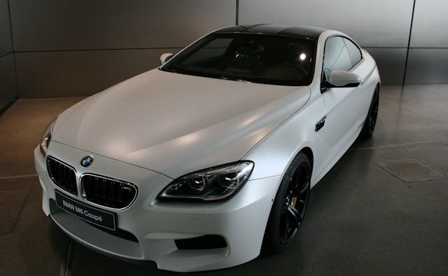

Mercedes Cls63 amg
 Mercedes Cls63 amg For me, the Mercedes-Benz CLS 63 AMG is my dream car, and I plan to buy it when I start working. I love its sleek design, powerful performance, and incredible features, including a 5.5L V8 Biturbo engine that delivers 577 hp and 800 Nm of torque. With its AMG-tuned 4MATIC all-wheel drive, it offers exceptional handling and stability, accelerating from 0 to 100 km/h in just 3.6 seconds. The car’s sporty yet luxurious interior features premium leather seats, an advanced infotainment system, and AMG-specific design elements. I especially love it in white, as it enhances its elegant and aggressive presence on the road.
Mercedes Cls63 amg For me, the Mercedes-Benz CLS 63 AMG is my dream car, and I plan to buy it when I start working. I love its sleek design, powerful performance, and incredible features, including a 5.5L V8 Biturbo engine that delivers 577 hp and 800 Nm of torque. With its AMG-tuned 4MATIC all-wheel drive, it offers exceptional handling and stability, accelerating from 0 to 100 km/h in just 3.6 seconds. The car’s sporty yet luxurious interior features premium leather seats, an advanced infotainment system, and AMG-specific design elements. I especially love it in white, as it enhances its elegant and aggressive presence on the road.
2017 BMW M6

The 2017 BMW M6 is a high-performance luxury grand tourer powered by a 4.4L TwinPower Turbo V8 engine producing 560 hp (600 hp with the Competition Package). It accelerates from 0-60 mph in 4.1 seconds (3.8 seconds with the Competition Package) and features a 7-speed dual-clutch transmission or a rare 6-speed manual. Available as a coupe, convertible, or Gran Coupe (4-door), it combines aggressive styling, a luxurious interior with advanced tech like iDrive, and adaptive suspension for sharp handling. With a top speed of 155 mph (190 mph with the Driver's Package), the M6 delivers a blend of power, luxury, and timeless design, making it a standout in its class.
2017 Audi RS6
 The 2017 Audi RS6 Avant is a high-performance luxury wagon powered by a 4.0L twin-turbocharged V8 engine, producing 552 hp and 516 lb-ft of torque. Paired with an 8-speed Tiptronic automatic transmission and Quattro all-wheel drive, it accelerates from 0-60 mph in just 3.7 seconds, with a top speed limited to 155 mph (190 mph with the Dynamic Plus Package). Known for its practicality and performance, the RS6 Avant combines a sleek, aggressive design with a luxurious interior featuring premium materials, advanced tech like Audi’s MMI infotainment system, and driver-assistance features. With its blend of supercar-level speed, everyday usability, and Audi’s signature Quattro handling, the RS6 Avant is a standout in the performance wagon segment.
The 2017 Audi RS6 Avant is a high-performance luxury wagon powered by a 4.0L twin-turbocharged V8 engine, producing 552 hp and 516 lb-ft of torque. Paired with an 8-speed Tiptronic automatic transmission and Quattro all-wheel drive, it accelerates from 0-60 mph in just 3.7 seconds, with a top speed limited to 155 mph (190 mph with the Dynamic Plus Package). Known for its practicality and performance, the RS6 Avant combines a sleek, aggressive design with a luxurious interior featuring premium materials, advanced tech like Audi’s MMI infotainment system, and driver-assistance features. With its blend of supercar-level speed, everyday usability, and Audi’s signature Quattro handling, the RS6 Avant is a standout in the performance wagon segment.